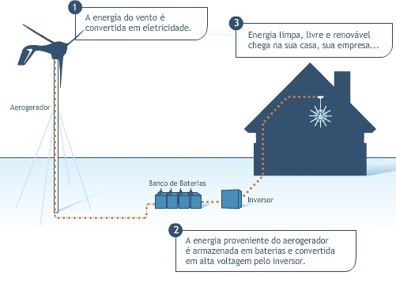

Noticias
Aneel aprova regras para incentivar microgeração de energia

A Agência Nacional de Energia Elétrica (Aneel) aprovou nesta terça-feira o texto da resolução que trata da microgeração
de energia elétrica, a qual se baseia na instalação de painéis solares ou minigeradores eólicos em residências para geração
complementar de energia elétrica.
A resolução permitirá que o cidadão continue a consumir a energia fornecida pela distribuidora, mas o medidor de
sua casa também passa a contabilizar a potência gerada pelos seus painéis solares. Numa situação em que a casa de um
consumidor chegue a gerar energia excedente, essa potência extra será enviada para o sistema integrado nacional, ou seja, o
cidadão passará a “vender” energia. Quando isso ocorrer, o consumidor terá um tipo de crédito em sua conta, que será abatido
no consumo dos meses seguintes. Esse crédito terá validade de 36 meses para ser descontado.
A partir da publicação da resolução, as distribuidoras terão 240 dias de prazo para adequarem suas estruturas comerciais
para atender o cidadão. O consumidor responderá pelos investimentos necessários até o ponto de conexão com a rede, incluindo
o relógio que irá contabilizar sua geração e consumo. A distribuidora, por sua vez, se responsabilizará pela estrutura da rede
que ligará o consumidor à rede integrada.
A resolução, segundo o relator do processo, diretor Romeu Donizete Rufino, ajudará a reduzir as barreiras para
incentivar o microgerador. A resolução prevê desconto de 80% na Tarifa de Uso dos Sistemas Elétricos de Distribuição (Tusd),
encargo cobrado sobre os consumidores conectados ao sistema das concessionárias de distribuição. A mesma redução será aplicada
à Tarifa de Uso do Sistema de Transmissão (Tust). O desconto para o empreendedor vigorará nos dez primeiros anos de operação,
incidindo na produção e consumo de energia do consumidor.
A expectativa do governo é de que a iniciativa abra as portas para a criação de uma indústria nacional de energia solar.
Hoje, quase 100% dos equipamentos vendidos no país são importados. Paralelamente, o Ministério de Minas e Energia deve iniciar
o projeto conhecido como “120 Telhados”, que prevê a instalação de tetos solares em 120 residências espalhadas pelo país.
A iniciativa conta com apoio da Universidade de São Paulo (USP) e Financiadora de Estudos e Projetos (Finep). As distribuidoras
de energia vão escolher consumidores para testar diferentes tecnologias de medidores e painéis de energia. Os estudos serão analisados
mensalmente.